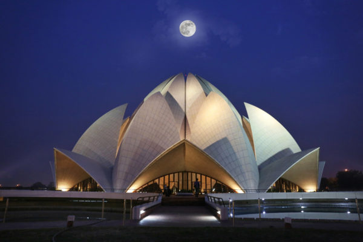
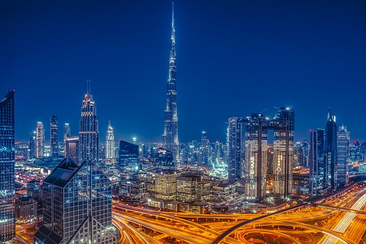

A lo largo del mundo la humanidad a construido grandes obras arquitectonicas que a mas de uno a podido impresionar ya sea por su diseño o dimension estas ponen en prueba todo potencial humano para la creacion de estas espetaculares estructuras,
El Templo del Loto, también conocido como el Templo Bahai, es un icónico lugar de culto en Delhi, India. Construido en la década de 1980, el templo destaca por su distintiva arquitectura en forma de flor de loto hecha de mármol blanco. Atrae a millones de visitantes cada año, quienes admiran su belleza y participan en las actividades y ceremonias espirituales que allí se llevan a cabo.
El Burj Khalifa es el rascacielos más alto del mundo, ubicado en el corazón de Dubái. Con una altura impresionante de 828 metros, este hito arquitectónico domina el skyline de la ciudad y ofrece vistas panorámicas desde su observatorio en el piso 124. El Burj Khalifa es no solo un símbolo de la ambición y el progreso de Dubái, sino también una atracción turística que atrae a millones de visitantes cada año.
